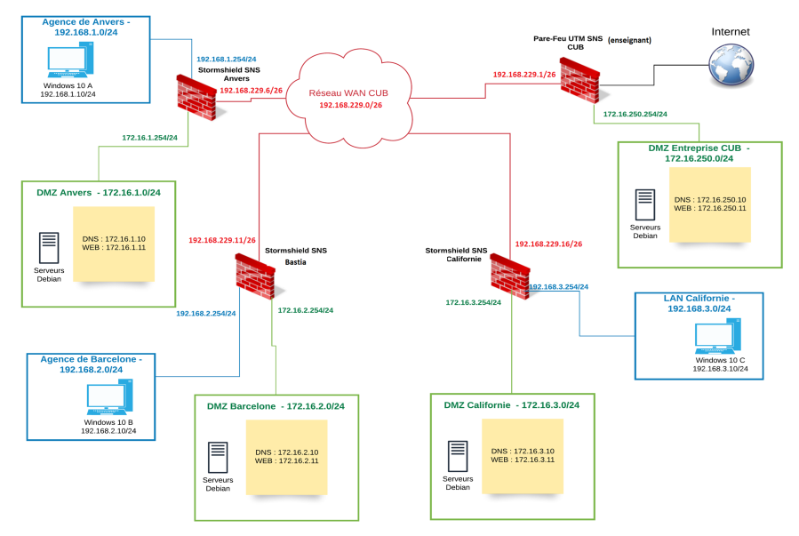

Projet 2 : Déploiement des services réseau (Projet CUB)
Cadre : Projet de spécialité SISR (Épreuve E4) - Infrastructure virtualisée
Contexte et Objectifs
Dans le cadre du projet "CUB", mon objectif était de déployer, configurer et sécuriser l'ensemble des services vitaux nécessaires au bon fonctionnement du système d'information d'une entreprise. L'intégralité de cette maquette a été réalisée et virtualisée sur un environnement Proxmox VE.
🗺️ Topologie Réseau du Projet CUB

💻 Vue d'ensemble de l'architecture
La gestion de ce parc virtualisé m'a demandé une grande rigueur dans le nommage et l'adressage des machines. Sur l'hyperviseur cible, j'ai déployé des serveurs sous distribution Linux (Debian) et Windows Server pour répondre aux besoins de l'entreprise.
Parmi les machines déployées :
- Des serveurs de rôles (AD DS, DHCP, DNS).
- Des outils de gestion de parc et de ticketing (GLPI).
- Des serveurs de supervision (Centreon).
- Des pare-feu pour le cloisonnement réseau (pfSense).

Arborescence des machines sur mon hyperviseur
⚙️ Configuration des services clés
Voici le détail technique des missions que j'ai réalisées sur les piliers de cette infrastructure :
🗄️ Active Directory (AD DS)
Objectif : Centraliser la gestion des identités, des ressources et de la sécurité du parc informatique.
- Installation et promotion du contrôleur de domaine sous Windows Server.
- Structuration de l'annuaire via des Unités d'Organisation (OU) par services.
- Gestion des utilisateurs, des groupes de sécurité et des partages réseau.
- Mise en place de GPO (Group Policy Objects) pour automatiser la configuration des postes clients.
📡 Serveur DHCP
Objectif : Automatiser l'attribution des configurations réseau aux postes clients.
- Configuration des étendues (scopes) et des options réseau.
- Mise en place de réservations statiques basées sur les adresses MAC.
🌐 Serveur DNS
Objectif : Assurer la résolution de noms de domaine au sein de l'infrastructure.
- Création des zones de recherche directe et inversée.
- Configuration des redirecteurs pour l'accès web externe.
🛡️ Pare-feu & Routage
Objectif : Sécuriser le périmètre et cloisonner les flux réseaux.
- Création de règles de filtrage strictes (ACL) sur pfSense.
- Mise en œuvre du NAT pour l'accès internet sécurisé.
📊 Supervision Centreon
Objectif : Surveiller l'état de santé du parc en temps réel.
- Configuration du protocole SNMP sur les serveurs cibles.
- Mise en place de sondes critiques (CPU, RAM, Disque, Services).